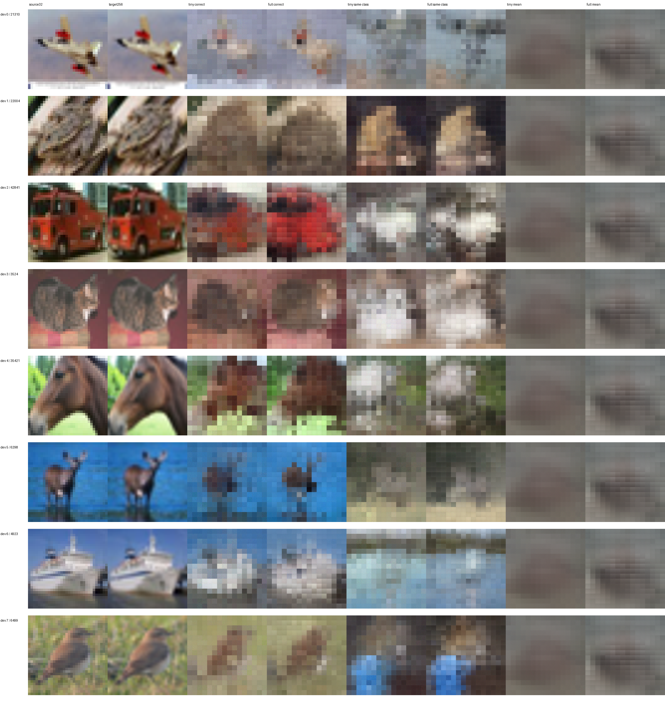
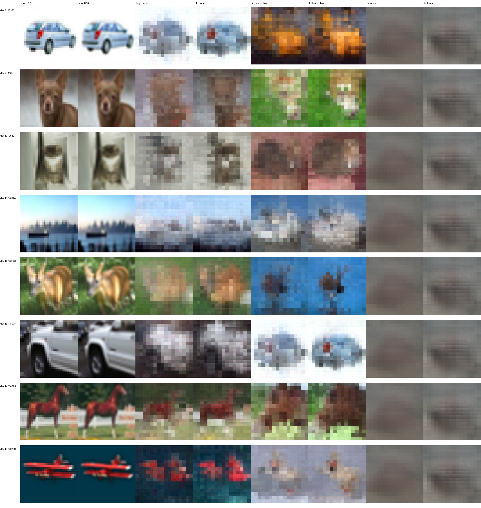
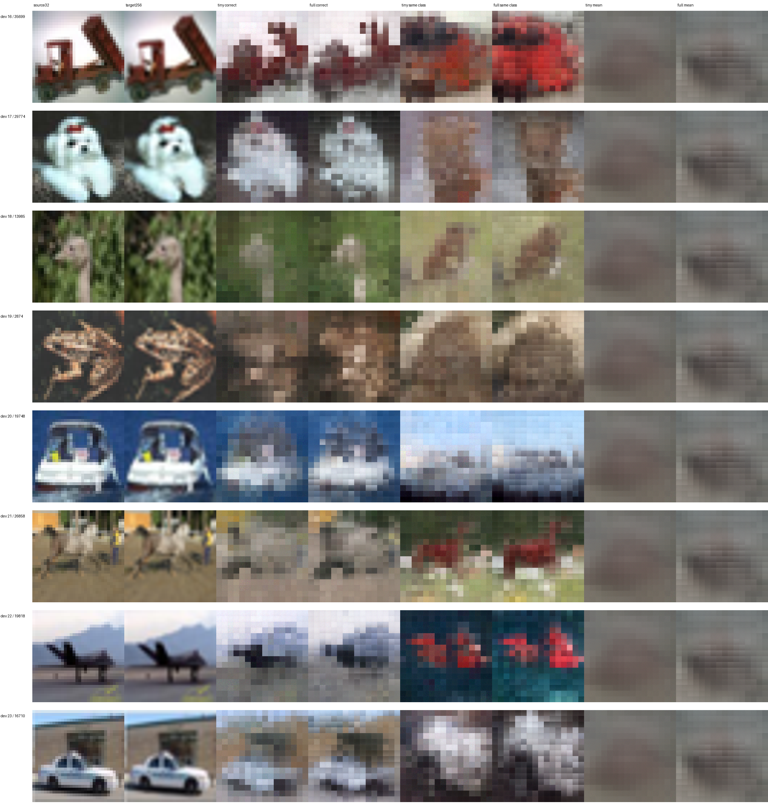
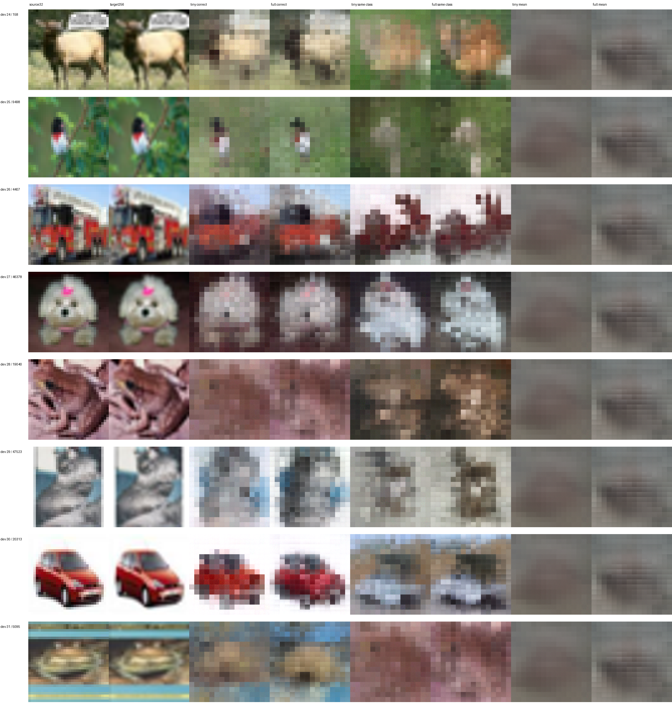
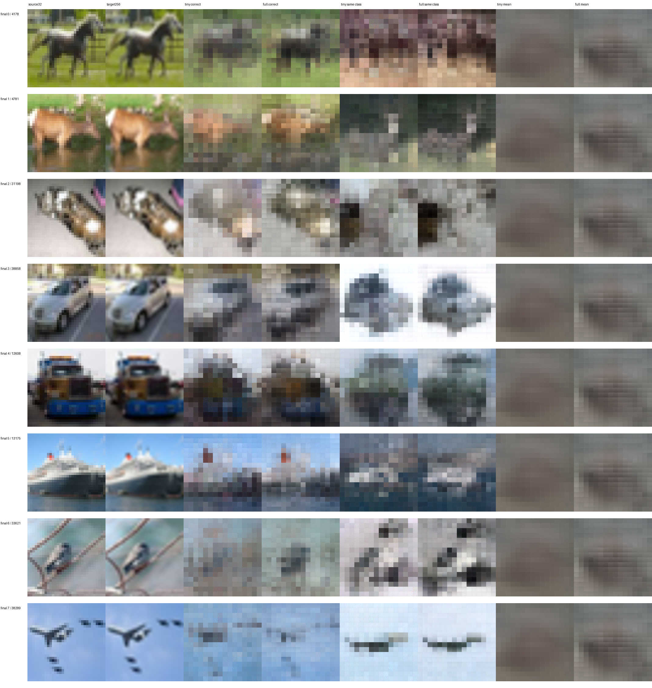
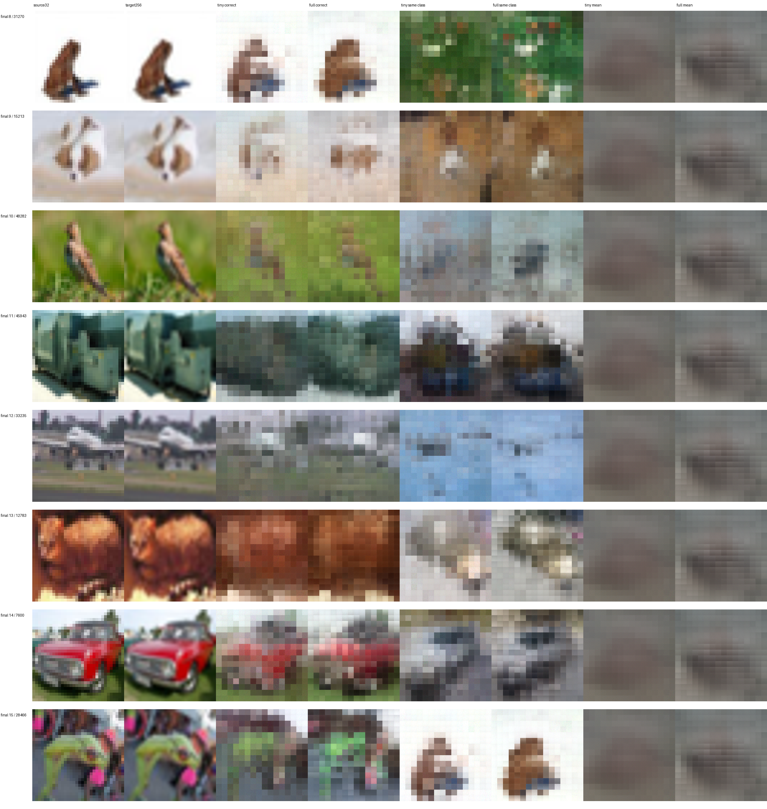
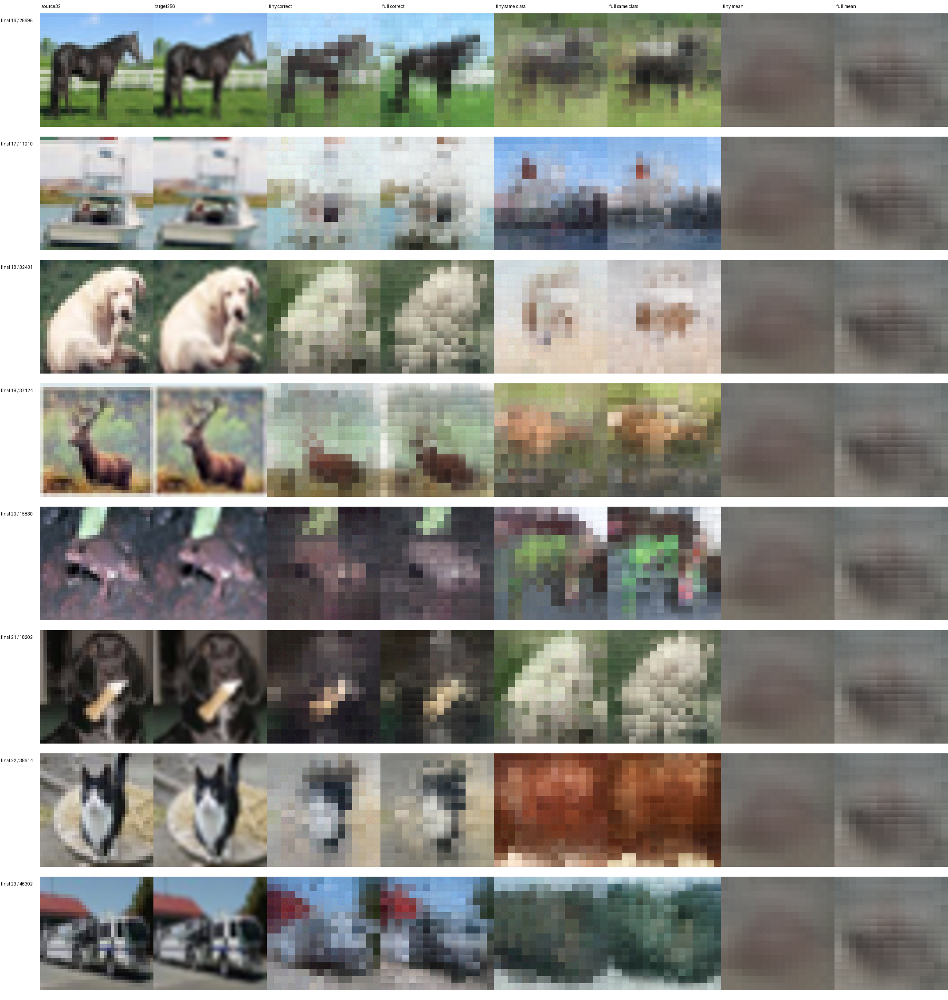
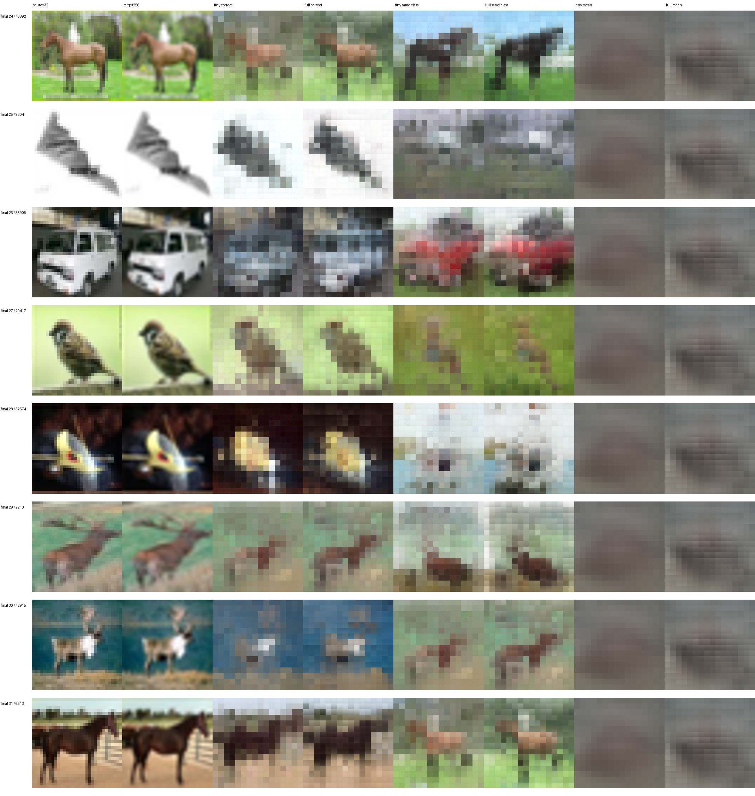
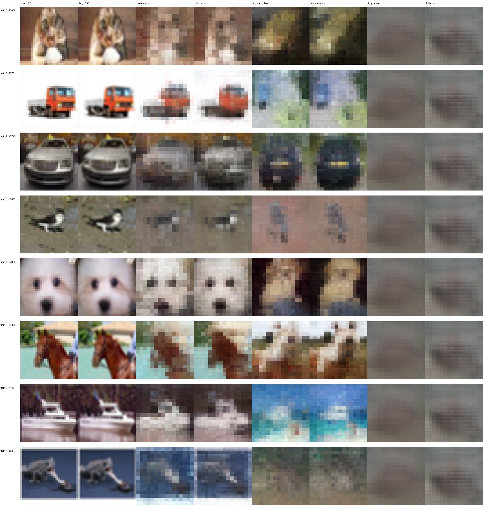
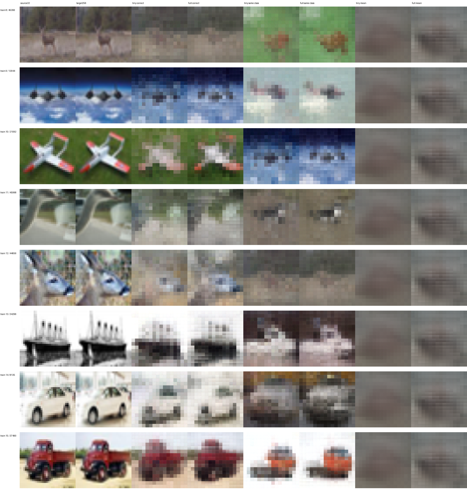

夜间 Qwen 视觉镜像重建实验 full 是否真正跑了： 已完成正式训练比 tiny 怎样： final MSE：full 0.021108，tiny 0.022460；full 相对 tiny 变化 -6.02%（负数更低）能否泛化： full 在本轮 final 优于固定训练均值图。不声称历史上从未使用这些图，也不外推到任意图像。pre/post 说明什么： 同一 1000/200 子集 dev MSE：pre 0.007980，post 0.023019；共享浅层主干，但 post 适配器多 3,148,800 参数，不是绝对完美控制变量，不能单凭差值证明信息不可恢复。语言接口是否运行： NOT_RUN：Provider lease has less than 60 minutes remaining after main reconstruction; official language weights were not downloaded or instantiated统一目标：官方Processor的256×256 RGB [0,1]，由32×32源图插值而来，不是新增真实细节。旧32×32小头不参与公平排名。
模型 split MSE MAE 均值图MSE mirror_tiny train 0.013542 0.086544 0.059756 mirror_tiny dev 0.021880 0.110701 0.056375 mirror_tiny final 0.022460 0.111447 0.063081 mirror_full train 0.008555 0.068034 0.059756 mirror_full dev 0.020566 0.106081 0.056375 mirror_full final 0.021108 0.106977 0.063081
详细训练/资源/控制变量边界见 文字报告 ；全部正确/错配/均值特征及边界诊断见 指标JSON ；固定索引 与共同训练锁定 。
图册全量展示预定 train16、dev32、final32；显示PNG裁剪到[0,1]，原生精度未裁剪预测另存。左右位置与样本ID不作为解码器输入。

gallery_dev_00 · 点击查看原尺寸全部固定样本 
gallery_dev_01 · 点击查看原尺寸全部固定样本 
gallery_dev_02 · 点击查看原尺寸全部固定样本 
gallery_dev_03 · 点击查看原尺寸全部固定样本 
gallery_final_00 · 点击查看原尺寸全部固定样本 
gallery_final_01 · 点击查看原尺寸全部固定样本 
gallery_final_02 · 点击查看原尺寸全部固定样本 
gallery_final_03 · 点击查看原尺寸全部固定样本 
gallery_train_00 · 点击查看原尺寸全部固定样本 
gallery_train_01 · 点击查看原尺寸全部固定样本